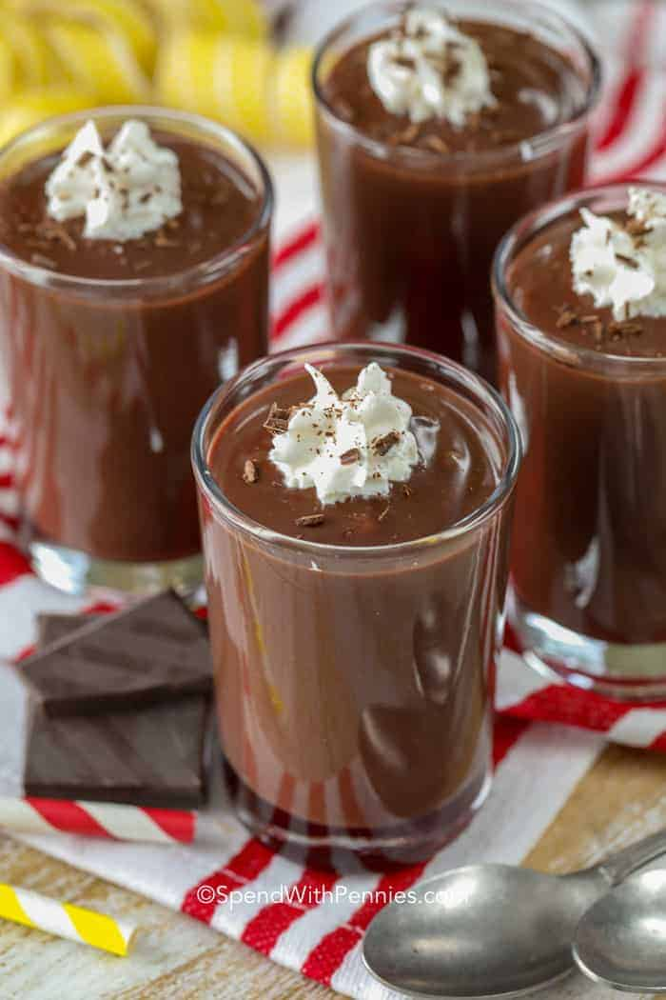

Chocolate Pudding

Description
Chocolate pudding is very delicious and easy to make. It gives me comfort and reminds me of home.
Ingredients
- 100g chocolate
- 1l milk
- 2 tbsp cocoa powder
- 7 tbsp sugar
- 4 tbsp supermarket corn flour
Steps
- Heat the milk with the cholate in a pot until the chocolate is melted
- Mix the rest of the ingredients
- Pour the rest of the ingredients from step 2 into the pot of step 1
- Heat it again until it is getting thick
- Pour everything in a bowl and wait until it is colder
- eat it either warm or put it inside the fridge for some hours to enjoy it cold